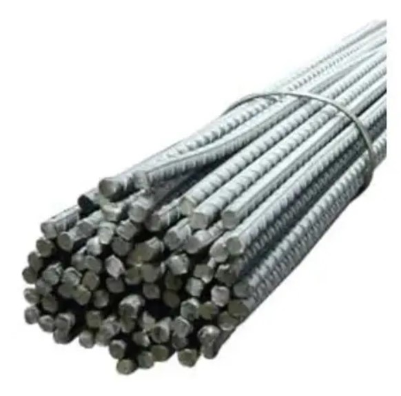
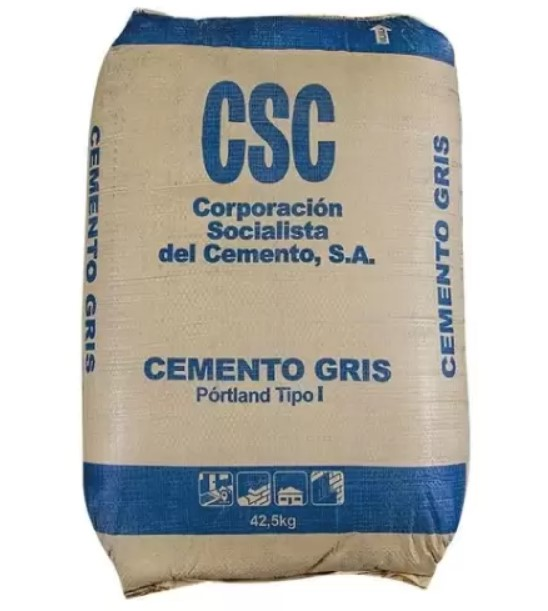
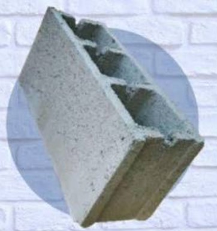
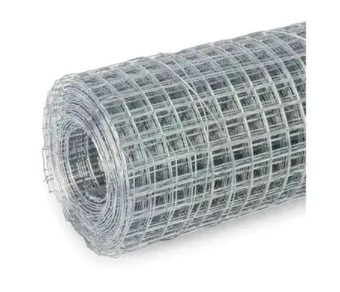
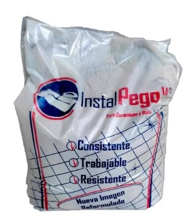
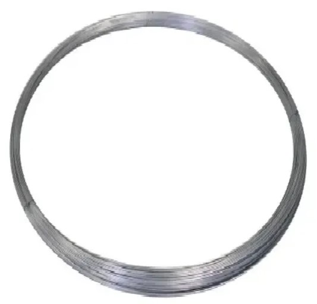
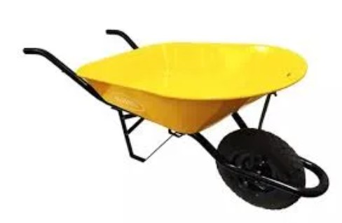
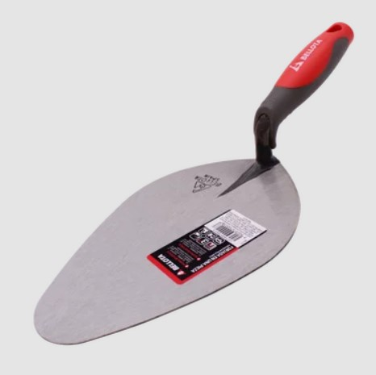

Cabilla estriada 1/2" x 6 mts
Cabilla estriada 1/2" x 6 mts
Barra de refuerzo estructural utilizada en columnas, vigas, losas y fundaciones
Organice su Construcción : Compre Accesorios para la Construcción

Barra de refuerzo estructural utilizada en columnas, vigas, losas y fundaciones

El cemento gris es un cemento Portland fabricado a partir de clinker y materiales minerales, usado para producir concreto y morteros de alta resistencia.

Excelente para tu proyecto de levantar paredes estructurales y cerramientos.

Para reforzar pisos de concreto, aceras y placas livianas.

Mortero premezclado diseñado para fijar baldosas y revestimientos en pisos y paredes.

Alambre flexible indispensable para amarrar cabillas en armaduras de acero y fijar encofrados.

Esencial para trasladar arena, piedra picada, mezcla y escombros en obra.

Herramienta manual usada para aplicar, extender y alisar mortero o mezcla sobre bloques y paredes.